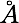

c(4x2) Si(001) surface


c(4x2) Si(001) surface

20. Now we can create a vacuum gap between slabs. Using 8, change the 3rd vector into 0.0 0.0, 30.0. The 1st stage of the surface construction is finished.
15. Construction will be greatly simplified if we now create a single Si dimer. Extend the cell with Ex using 0 0 , 0 1, 0 0, preview after B0, right:
18. Use Bb with -2 2, -2 2, 0 0 to appreciate the obtained surface (right).

16. The highest atoms have numbers 12 and 24. Let us create first a symmetric dimer by moving these two atoms towards each other by 0.7 . Use Mv, then 12 12 for the range; then we use method “1. Direction”: choose 1, then 12 as the primary and 24 as the target atoms, followed by 1 (“By some distance”) and 0.7 (the displacement). The atom 12 is moved by the required distance towards atom 24.

17. Repeat this procedure for atom 24: type Mv, then 24 24 for the range; then method 1, then 24 as the primary and 12 as the target atoms, followed by 1 (“By some distance”) and 0.7 (the displacement). The atom 24 is moved by the required distance towards atom 12. The obtained structure is shown on the left.


19. At the moment our cell corresponds to the extension 1x2. Now we are ready to create the 4x2 extension which will serve as the elementary cell for the required extension with two rows containing 4 dimers each. Hence, we now need to make the 2x2 extension of the current cell (which would then correspond to the 2x4 extension of the original bulk cell). Use Ex with 0 1 and 0 1 and 0 0 (left).